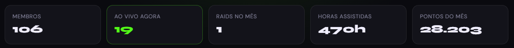
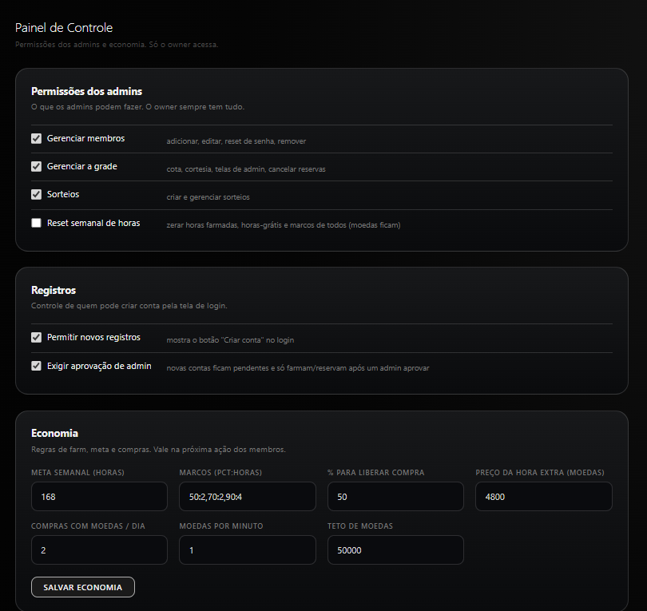
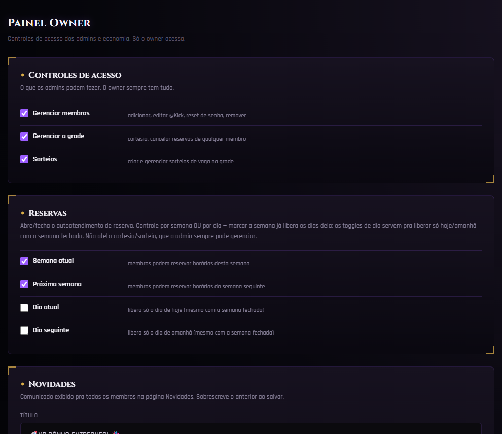
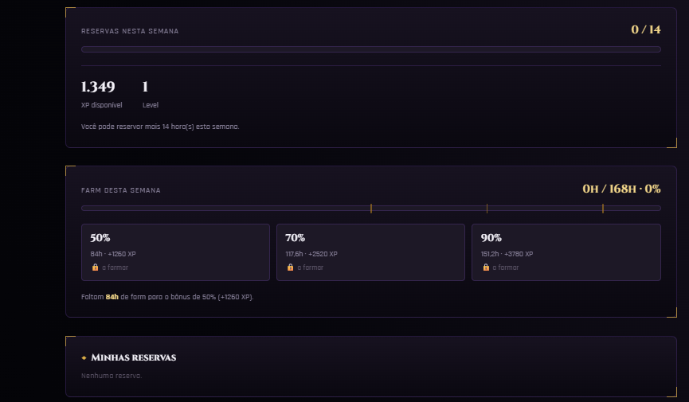
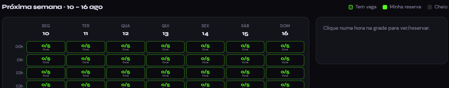

Plataforma de Comunidade
para Streamers
Produto entregue três vezes, para três comunidades diferentes de streamers — cada versão mais elaborada que a anterior. Reúne app desktop em Electron, site estático e um banco Postgres com toda a lógica de negócio em RPCs protegidas. As comunidades somam mais de 350 membros.
É o trabalho mais denso do meu portfólio em termos de arquitetura: algoritmo de distribuição determinístico, camada anti-fraude em três frentes, economia configurável em runtime e um app Electron endurecido.
Clientes e marcas omitidos por privacidade. As capturas foram recortadas para preservar a identidade das comunidades e dos seus membros.
01O produto
Streamer pequeno enfrenta um problema circular: sem audiência não há chat, sem chat não há motivo para continuar transmitindo. Essas comunidades existem para quebrar esse ciclo — os membros combinam horários para prestigiar a live uns dos outros, em vez de cada um transmitir sozinho.
O que era informal (grupo de WhatsApp, "quem tá on hoje?") virou sistema: uma grade semanal onde cada membro reserva o seu horário, um app desktop que reúne quem está escalado naquela hora, e uma economia de pontos que recompensa quem participa. Os pontos são gastos para reservar horários futuros — quem apoia, ganha apoio.
A distribuição é o ponto sensível do design: o sistema prioriza deliberadamente quem ainda não foi contemplado. Sorteios de vagas livres dão preferência a quem não ganhou nos últimos 7 dias, e há teto semanal de horas reserváveis por membro — para a grade não ser dominada por poucos.
02Arquitetura
Três peças, sem servidor de aplicação próprio — o Postgres é a fonte da verdade e também onde vive a lógica de negócio.
-
App desktop (Electron)
Windows. Faz login na comunidade, conecta a conta do streamer e monta a visualização das lives da hora.
-
Site estático
HTML/CSS/JS puro em CDN (Cloudflare Pages / Vercel): landing, reservas, sorteios e painéis administrativos.
-
Postgres + Auth
Supabase como banco e autenticação. Toda regra de negócio em RPCs
SECURITY DEFINERcom guarda. -
Tarefas agendadas
pg_cronexecuta os sorteios de vaga de minuto em minuto, direto no banco — sem worker externo.
A decisão central foi não confiar no cliente para nada que valha ponto. A chave anônima do Supabase é pública por design, então a segurança real está no RLS de todas as tabelas e nas guardas dentro de cada RPC — não em esconder credencial.
03O algoritmo de distribuição
O problema mais interessante do projeto. Nas duas primeiras entregas, todos os membros acompanhavam o mesmo conjunto de streamers ao mesmo tempo — o apoio chegava concentrado. Na terceira, precisei distribuir isso de forma equilibrada.
A solução: a comunidade é dividida em dois blocos por hash determinístico do ID do membro (~50/50, estável entre sessões). A cada rodada de 10 minutos, os blocos acompanham conjuntos diferentes da grade e depois trocam. Ao longo de uma hora, cada membro passa por todos os 8 streamers escalados, 3 vezes cada — e nenhum streamer recebe a comunidade inteira de uma só vez.
-
Embaralhamento sem escrita
Fisher-Yates semeado pela chave da hora: todos os apps derivam a mesma permutação por função pura, sem gravar nada no banco nem divergir entre si.
-
Reconciliação por posição
Na troca de rodada, só recria a tela cujo canal mudou. Se a posição manteve o mesmo canal, o nó é reaproveitado — evita reconexão desnecessária.
-
Reload escalonado
Jitter por instância e atraso por índice, para a comunidade inteira não recarregar no mesmo instante e ser estrangulada pelo anti-bot.
-
Leitura à prova de falha
Erro de rede retorna
null(mantém o estado atual + retry com backoff), nunca lista vazia — que zeraria a grade de todo mundo.
04Integridade e anti-fraude
Uma economia de pontos só funciona se ninguém conseguir burlá-la — e o apoio só tem valor se vier de pessoas reais, em máquinas reais. Foi requisito explícito de contrato e concentrou boa parte do esforço:
-
Conta própria obrigatória
Cada membro autentica na própria conta, no navegador real. Se a sessão cai, a contagem pausa imediatamente.
-
Instância única
requestSingleInstanceLock()— o segundo processo no mesmo PC nem chega a abrir. -
Um dispositivo por membro
Sessão ativa amarrada ao ID de máquina lido no processo principal (não no
localStorage). O segundo PC recebe conflito e credita zero. -
Relógio único no servidor
Crédito por tempo real no mesmo registro: duas instâncias competem pelo mesmo relógio em vez de dobrar pontuação. Com teto de saldo.
-
Bloqueio de datacenter
Fase dedicada com ProxyCheck, IPQualityScore e IPInfo — bloqueia VPS, VPN, proxy e máquina virtual por keywords de hardware.
-
Crédito 100% server-side
O cliente jamais decide pontuação. Quem valida e credita é a RPC no Postgres, com guarda no topo.
05Segurança da aplicação
-
RLS em todas as tabelas
Leitura pública restrita ao necessário; escrita apenas por usuário autenticado, dentro do próprio escopo.
-
Gatilho anti-escalada
Trigger bloqueia alteração de papel, flag de owner ou saldo por quem não é owner — mesmo que a linha seja "sua".
-
Electron endurecido
contextIsolationesandboxligados,nodeIntegrationdesligado, preload restrito acontextBridge, sem DevTools em produção. -
Segredos fora do Git
Chaves em variável de ambiente e arquivo
gitignored; histórico limpo para transferir o repositório ao cliente.
06Três entregas, um playbook
O maior aprendizado não foi técnico, foi de negócio: transformar o primeiro projeto em um playbook reaproveitável — arquitetura, modelo de dados, padrões de segurança e checklist de entrega. Isso encurtou drasticamente o prazo das entregas seguintes e permitiu cobrar por valor, não por hora.
-
1ª entrega — o MVP
React + Electron, persistência local evoluindo para Postgres. Validou o conceito e definiu o modelo de dados.
-
2ª entrega — o produto
Já nasceu com banco, RLS, sorteios automáticos por
pg_crone economia inteiramente configurável pelo painel. -
3ª entrega — a engenharia
Algoritmo de distribuição, reconciliação de telas e anti-fraude em três camadas. Contrato de maior valor da linha.
-
Config sobre código
Toda regra de negócio virou parâmetro em tabela — o cliente calibra a comunidade sem redeploy e sem me chamar.
07Telas
Recortes das interfaces, sem identificação das comunidades. Todas as marcas, nomes de membros e dados de contato foram removidos.




